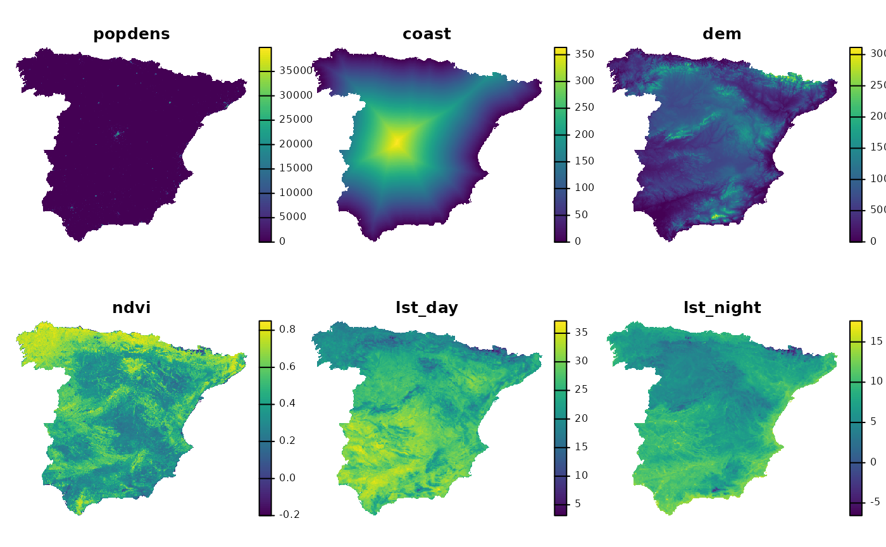
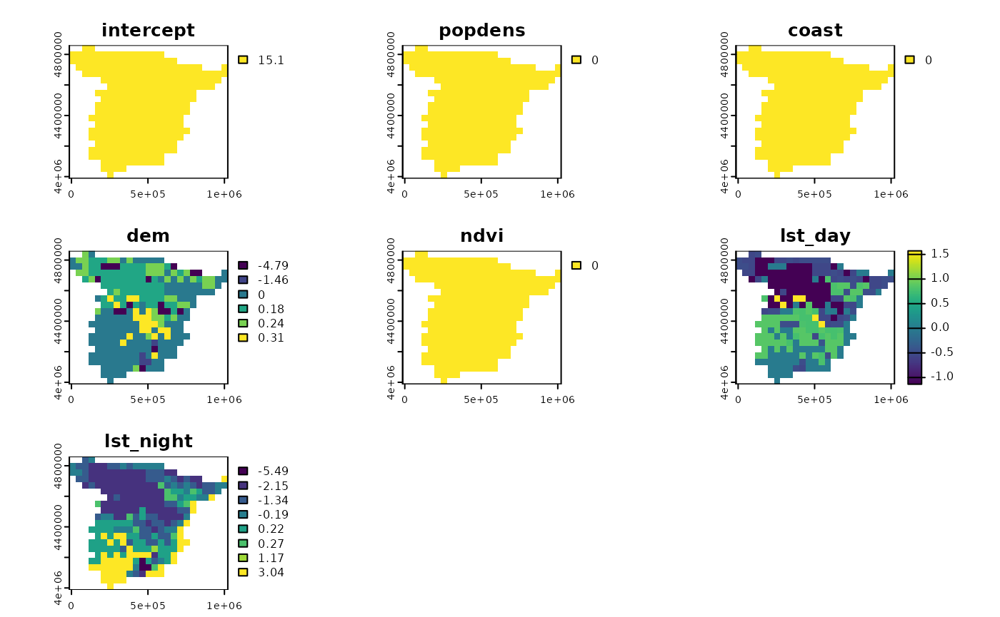

Spatial break-down
Jakub Nowosad
2025-02-25
Source:vignettes/articles/Spatial-break-down.Rmd
Spatial-break-down.RmdThe spatialexplain package provides model agnostic tools for exploring and explaining spatial machine learning models. This vignette shows a simple example of how to use it to explain a regression model with the Break Down method.
Lets start by attaching the necessary packages, reading the predictors raster, and loading the pre-trained regression model.
# attaching the necessary packages
library(spatialexplain)
library(terra)
# reading the predictors raster
predictors = rast("/vsicurl/https://github.com/Nowosad/IIIRqueR_workshop_materials/raw/refs/heads/main/data/predictors.tif")
plot(predictors, axes = FALSE)
# loading the pre-trained regression model
data("regr_exp", package = "spatialexplain")
regr_exp
#> Model label: rpart
#> Model class: rpart
#> Data head :
#> popdens coast dem ndvi lst_day lst_night
#> 1 0.000000 1.126301 85.90540 0.3656146 24.37792 12.64256
#> 2 1.211701 6.743273 75.00126 0.3990190 28.13341 10.70668Now, we can use the map_breakdown() function to explain
the regression model using the Break Down method.
regr_psp_bd = map_breakdown(regr_exp, predictors, maxcell = 500,
type = "break_down")
plot(regr_psp_bd)
The outcome is a set of raster layers that show the contribution of
each predictor to the model prediction. The Break Down method quantifies
how each explanatory variable contributes to the model’s average
prediction by assessing the impact on the prediction as values of each
variable are fixed in sequence. Each of the cells in the raster is the
contribution of the predictors to the model prediction. Here, we can see
that the intercept of the model is 15.1 for the whole area, and that the
variables popdens, coast, and
ndvi do not have any influence on the model prediction. On
the other hand, the variables dem, lst_day,
and lst_night affect the model prediction differently,
depending on the location. For example, the dem variable
negatively influences the model prediction in the mountainous areas –
the higher the elevation, the lower the temperature. On the other hand,
lower values of the lst_day and lst_night
variables are associated with lower temperatures.
The Break Down method outcomes can be used to better understand the model’s behavior and to identify the areas where the model is most sensitive to changes in the predictors. On the other hand, it may not be the best method to explain complex models with correlated features. For more explanation of the Break Down method, read the “Break-down Plots for Additive Attributions” chapter from the Explanatory Model Analysis book.